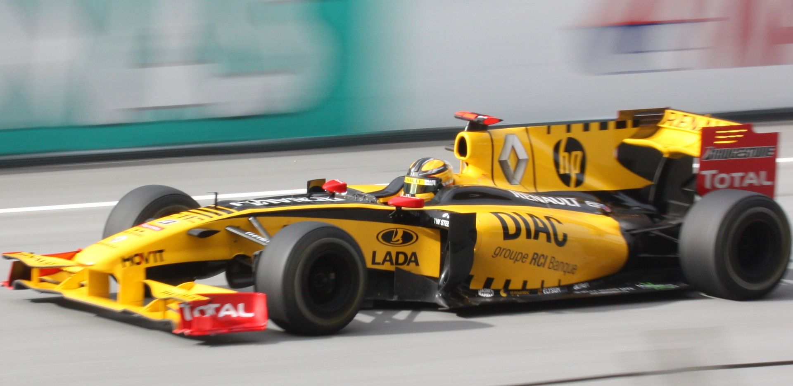
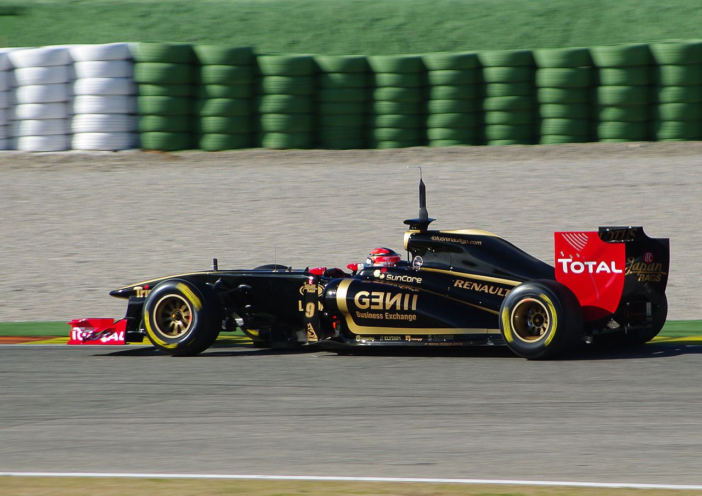
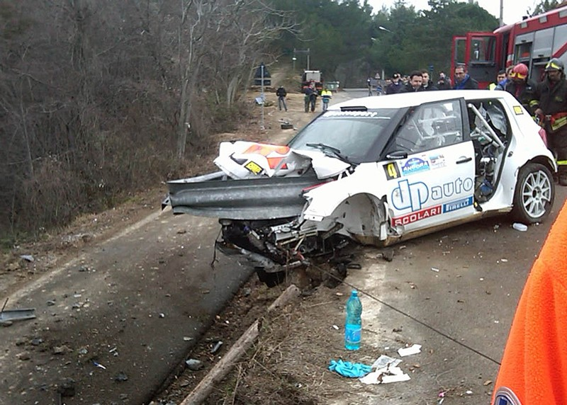

Sezon 2010
W sezonie 2010 Kubica jeździł bolidem Renault R30, a jego partnerem zespołowym został Witalij Pietrow. Przed sezonem zespół ten wymienił w całości swój skład kierowców wyścigowych. Został opuszczony przez głównych sponsorów po aferze crashgate, pozostał jednak w Formule 1 po nawiązaniu współpracy ze spółką Genii Capital. W sezonie 2010 doszło do kolejnych zmian w regulaminie Mistrzostw Świata – przede wszystkim zakazano tankowania w trakcie wyścigu i zmieniono system punktacji.
Bolid Renault nie był na tyle konkurencyjny, aby walczyć o najwyższe lokaty(wystarczy spojrzeć na Pietrowa), ale pomimo to, Robert był w stanie punktować w każdym wyścigu, który ukończył(nie ukończył trzech), poza pierwszym Grand Prix - Bahrajnu. Stanął 3 razy na podium, zdobył łącznie 136 punktów, co dało mu 8. miejsce w klasyfikacji kierowców.
 W wyścigu o Grand Prix Australii 28 marca 2010 startował z 9. pozycji, na oponach przejściowych. Na pierwszym okrążeniu awansował na czwartą lokatę, czemu sprzyjało kilka kolizji wśród kierowców znajdujących się na wyższych pozycjach. Nastąpiła neutralizacja, po której zakończeniu Kubica próbował wyprzedzić Marka Webbera, jednak bezskutecznie. Tor przeschnął, a na ósmym okrążeniu Kubica wymienił opony na slicki. Podczas postoju udało mu się wyprzedzić Massę, jednak sam wkrótce stracił pozycję na rzecz Jensona Buttona. Brytyjczyk jako pierwszy wymienił opony i dysponował bardzo dobrym tempem, które pozwoliło mu wyprzedzić Polaka na dziewiątym okrążeniu. Po późnym pit-stopie Marka Webbera na jedenastym okrążeniu Polak awansował na trzecią pozycję. Jechał za Vettelem i Buttonem, a przed Rosbergiem. W samochodzie lidera doszło jednak do awarii hamulców na 26. okrążeniu i wycofał się z wyścigu. Na 26. okrążeniu Hamilton wyprzedził Rosberga i wywierał presję na Kubicy, którego opony były już znacznie zużyte. Po zjeździe kierowcy McLarena Polaka poprzedzali kierowcy Ferrari, jednak Kubica obronił pozycję i linię mety przekroczył jako drugi. Zdobył swoje jubileuszowe, dziesiąte podium oraz pierwsze dla teamu Renault F1. Zdobywszy pierwsze w tym roku punkty dla zespołu, Polak znalazł się na szóstej pozycji w klasyfikacji generalnej kierowców, a Renault na czwartej w tabeli konstruktorów.
.jpg){kind=link}
Robert Kubica 15 maja w kwalifikacjach do wyścigu o Grand Prix Monako wywalczył drugą pozycję startową, ustępując jedynie Markowi Webberowi z Red Bull Racing. Podczas wyścigu, tuż po starcie został wyprzedzony przez startującego z 3 miejsca Sebastiana Vettela. Do samego końca wyścigu nie dał się wyprzedzić żadnemu zawodnikowi, odbywając jedyny pit-stop na 21. okrążeniu i ostatecznie zajął trzecie miejsce. Było to drugie dotychczas podium tego zawodnika w sezonie 2010, a zarazem jedenaste w karierze. Dzięki niemu awansował na szóste miejsce w klasyfikacji kierowców, przesuwając się o dwie pozycje.+ Podczas kwalifikacji do wyścigu w Monako, Robert przejechał okrążenie, które do dzisiaj przez niektórych uważane jest za najlepsze okrążenie na tym torze.
2011 - wypadek
 31 stycznia 2011 odbyła się prezentacja bolidu Renault R31, w której brał udział Kubica. Następnie odbyły się testy na torze Ricardo Tormo, gdzie osiągnął on najlepszy czas i pobił rekord toru. 6 lutego 2011 Robert Kubica uległ wypadkowi podczas pierwszego odcinka specjalnego rajdu Ronde di Andora, jadąc Škodą Fabią S2000 Evo2 należącą do zespołu DP Autosport. Kubica uderzył lewą stroną samochodu w barierę. Bariera przeszła przez ścianę grodziową pojazdu i przygniotła kierowcę. Jego pilot Jakub Gerber wyszedł z auta o własnych siłach i bez obrażeń. Aby wydostać Kubicę z wraku, trzeba było rozciąć karoserię. Polski kierowca został zabrany helikopterem do szpitala Santa Corona w Pietra Ligure. Przyczyną wypadku był prawdopodobnie mokry asfalt oraz jego wybrzuszenie z powodu wystającego korzenia drzewa. Kubica zaraz po wypadku był przytomny – trzymał rękę Gerbera. Podczas drogi do szpitala Św. Korony w Pietra Ligure był intubowany, a na miejscu został przebadany w celu wykrycia uszkodzeń narządów wewnętrznych i mózgu. Kierowca doznał wielomiejscowych złamań prawej ręki i nogi oraz uszkodzenia kości dłoni. Został zoperowany przez prof. Mario Igora Rossello. Lekarze musieli zatamować krwotok, a następnie złożyli kości w uszkodzonej ręce i nodze. Operacja trwała siedem godzin. 
{kind=link}
{kind=link}
7 lutego 2011 roku Kubica został wybudzony ze śpiączki farmakologicznej, zakończono intubację i nawiązano z nim kontakt, Kubica narzekał na ból operowanej nogi i ręki. 9 lutego poinformowano, że Kubica zostanie przeniesiony z oddziału intensywnej terapii na ortopedię. Przeprowadzono kolejną operację złamanej prawej ręki i stopy. 11 lutego 2011 kardynał Stanisław Dziwisz życzył kierowcy powrotu do zdrowia i przekazał mu relikwie, o które prosił sam Kubica – kroplę krwi i skrawek szaty Jana Pawła II.
Źródła: wikipedia.pl